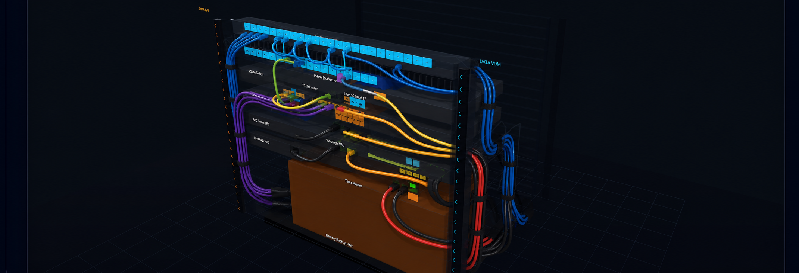

A focused rack-building workspace with two control layers, a larger canvas, contextual inspection, and a 3D cable renderer that follows managed real-world paths while preserving RackSim's plain-color visual language.
The redesign keeps RackSim's existing data and workflow model. It reorganizes the shell, then adds a bounded set of cable and 3D capabilities. This proposal separates those two scopes so implementation estimates remain honest.
Approved direction
Use one global bar and one canvas bar. Never allow a third permanent toolbar row.
Give the rack canvas the remaining space; collapse the inspector when needed.
Use tabs for device, cable, and port context instead of stacked panels.
Keep every 3D cable route visible by default. Selection adds emphasis; it does not hide context.
Route cables like a managed physical build, but render them as plain-color tubes, not photorealistic cable jackets.
Non-goals
Do not use generated concept art as a runtime texture or source of device truth.
Do not replace the existing rack geometry, port positions, device labels, or stored routes.
Do not introduce a physics simulation.
Do not force plugin workflows into the core shell.
Do not delete persisted plugin data when a plugin is disabled.
2. Final shell direction
The shell exposes two conceptual axes in two places: the global bar answers “which job?”, while the canvas bar answers “how am I viewing this rack?”
▦ RackSim
BuildCheckOpsPlanFleet
⌕ Search anything… ⌘K
My On-hand Gear● Health · 1 warningPower 402/900 W · Weight 38/60 kg
2D3DCables
Front•••
24-port patch panel
Front cable manager
UniFi UCG-Max · Flex 2.5G
Shelf
Minisforum UM790 Pro
Shelf
寶藏盒 Pro NAS
Two rows maximum
At narrower widths, health details collapse before controls wrap. The shell never recreates the old three-row chrome.
The inspector collapses, resizes, or becomes a drawer. The rack fits available width instead of remaining small inside empty canvas space.
3. 2D workspace
Rack canvas
Default to fit-width at 70–80% of usable canvas. Keep one strong selection outline, category accents, and lighter shelf treatment. Reduce the secondary U scale and expose the outline view on demand.
Inspector
Use Properties, Cables, and Ports tabs. Keep the header compact. Move destructive actions into an overflow menu and show explicit saved or unsaved state.
Health
Show one warning summary at medium widths. A click opens the matching Check lens. Missing budgets display “Not configured”; they never appear healthy by default.
Device library
Open as a temporary drawer or slide-over. Closing it returns the space to the rack. On touch layouts, use a bottom sheet.
4. Cable workspace
Map, 3D routing, and Table share selection and filters. Each mode changes the visualization, not the surrounding shell or the cable-first inspector.
Persistent type visibility
Show every used cable type with count and visibility. Move zero-count types into an “Unused” group. On narrow screens, collapse the rail into a small drawer.
Cable-first inspection
Show endpoints, ports, route length, stocked length, label, lifecycle state, and notes. Device properties remain available through a direct jump, not as the default cable context.
Focus policy
Default to all: every cable remains visible. Selection adds width or halo only. Dim and Hide are explicit user actions, never automatic side effects.
Actionable warnings
Place length and routing warnings on the route and in the inspector. Offer the recommended stocked length and a safe route recalculation where possible.
5. 3D cable routing: final visual direction
This concept captures cable organization and material treatment only. Runtime geometry, device labels, endpoints, and route count come from RackSim's stored layout. Generated labels in the concept are not product data.

Target: all routes visible; managed bends, service loops, tray separation, and bundling; plain solid colors with minimal shading.
Path geometry
Use true port endpoints, horizontal managers, deterministic tray lanes, realistic bend radii, small unsupported-segment sag, and service loops near dense patch areas. Data and power use separate channels.
Visual material
Render each route as a smooth, constant-radius TubeGeometry with solid type color, roughness near 1, metalness 0, and minimal emissive lift. Avoid textures, glossy rubber, braiding, and photographic detail.
All-route visibility
Render one tube per stored cable, including bundle members. A bundle shares a trunk but keeps deterministic parallel lane offsets. “Collapse bundles” may exist as a performance option, not the default.
Selection
Keep the selected route at its normal color and add a restrained halo or 1.25× outline. Other routes retain their colors and opacity. Follow Route animates the camera without changing visibility.
Port endpoints, CatmullRom curves, sag, patch loops, rail lanes
Deterministic lane allocation, collision checks, refined service loops
New behavior
Plain cable tubes
TubeGeometry and per-type colors exist
New material preset and restrained selection halo
Refinement
All cables visible
Routes already map from layout cables
Remove automatic 20% muting/hiding and default bundle collapse
Behavior change
3D camera presets
Smooth camera rig exists
Front, Rear, ISO, Top, Reset controls
New control
Follow Route
Curves provide a path
Camera traversal, reduced-motion alternative, cancel/reset
New feature
Export center
BOM and CSV exports exist
Adapter contract for PDF, draw.io, Visio, Excalidraw
Roadmap
7. Responsive, accessibility, and states
≥1440 pxFull health details, fixed inspector, expanded cable rail.
1024–1439 pxHealth collapses to one summary; inspector remains resizable.
768–1023 pxInspector becomes an overlay drawer; cable rail collapses.
<768 pxCanvas first; drawers and bottom sheets replace fixed side panels.
Accessibility
Keyboard access to rack items, cables, view modes, and inspector tabs.
Text and icon backup for every color-coded state.
Correct tab semantics and a screen-reader outline of rack contents.
Reduced-motion alternatives for auto-rotate and Follow Route.
Minimum 44 px touch targets on touch layouts.
Required states
Empty rack, empty cable set, no selection, and filtered-to-zero.
3D loading, WebGL context loss, recovery, and unsupported GPU.
Unsaved edits, save failure, delete confirmation, and undo.
Missing power or weight budget and incomplete device metadata.
Plugin disabled, unavailable, incompatible, or awaiting approval.
8. Plugin and persistence contract
Contribution points
Workspaces enter global navigation, view modes enter the canvas switcher, contextual actions enter overflow, and plugin inspector content enters declared tabs or panels.
Overflow rules
Core 2D, 3D, and Cables remain visible. Additional plugin modes move into More after the available width or mode count is exceeded.
Data preservation
Disabling a plugin hides its workflow. It does not delete stored labels, aliases, routes, or user settings. Re-enabling restores the workflow against existing data.
Context entry
Port Labels remains optional but gains a contextual entry from the Ports tab. Export formats register through adapters instead of separate hard-coded buttons.
9. Delivery plan
Phase 1
Stabilize the two-level shell, responsive hierarchy, rack fit, inspector tabs, and health summary.
Gate: named routes pass at desktop and tablet widths
Phase 2
Ship the cable-first inspector, permanent type visibility, explicit focus modes, warnings, and shared Map/3D/Table state.
Gate: 18 routes remain selectable and visible
Phase 3
Replace the old 3D cable presentation with managed paths and plain tube materials. Expand bundle members by default.
Gate: route geometry and GPU budget pass
Phase 4
Add camera presets, layers, depth checks, Follow Route, reduced-motion behavior, and recovery feedback.
The feature flag preserves a rollback path until browser QA completes.
11. Verification commands
npm test npm run smoke:cables npm run test:plugins npm run build node scripts/check-bundle-size.mjs git diff --check
Browser QA must cover 18-route, 42U/60-route, dense patch-panel, 0U PDU, front/rear mixed-face, and weak-GPU fixtures. Revalidate the current bundle budget before implementation; prior measurements left almost no eager headroom.